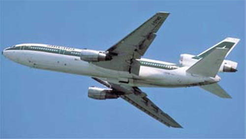

DC-10-30

- Разработчик: Douglas
- Страна: США
- Первый полет: 1972
- Тип: Дальнемагистральный пассажирский самолет
В июне 1969 г. объединенная европейская группа KSSU (в составе авиакомпаний KLM, SAS, "Свиссэр" и UTA) обратилась к фирме McDonnell Douglas с предложением о разработке дальнемагистрального варианта самолета DC-10-10 и заказала 36 таких самолетов. В ответ на это предложение фирмой был создан вариант DC-10-30, имевший крыло увеличенного размаха, более мощные ТРДД и увеличенный запас топлива.
Первый полет самолет выполнил 21 июня 1972 г. В конце ноября 1972 г. была завершена сертификация по нормам FAR, и практически сразу первый самолет был поставлен авиакомпании "Свиссэр". В дальнейшем все авиакомпании - члены группы KSSU получили самолеты DC-10-30. Данная модификация оказалась наиболее распространенной среди вариантов самолета DC-10. Пять самолетов были построены в варианте DC-10-30ER, который имел взлетную массу 263,6 т и запас топлива 153430 л. Дальность полета этого самолета составляет более 11000 км.
Для ВВС США на основе пассажирского самолета был разработан транспортный самолет-заправщик КС-10А "Икстендер" (построено 60). В 1992 г. ВВС Нидерландов купили два самолета DC-10-30 и переоборудовали их в самолеты-заправщики КDС-10. В конце 1970-х годов фирма McDonnell Douglas предложила Министерству авиационной промышленности СССР закупить для "Аэрофлота" самолеты DС-10-30. Данное предложение реализовано не было. В настоящее время два самолета DС-10-30 находятся в составе авиакомпании "Аэрофлот - Российские международные авиалинии" и выполняют грузовые перевозки.
На самолете установлен обычный комплекс авионики с электромеханическими средствами индикации данных. Выпускался серийно в 1972-1989 гг. Всего было поставлено 206 самолетов (включая 37 грузовых и грузопассажирских вариантов).
| Летно технические характеристики | |
|---|---|
| Модификация | DC-10-30 |
| Размах крыла максимальный, м | 50.42 |
| Длина, м | 55.33 |
| Высота, м | 17.70 |
| Площадь крыла, м2 | 329.80 |
| Масса, кг | |
| - пустого самолета | 121300 |
| - нормальная взлетная | 252000 |
| Тип двигателя | 3 ТРД General Electric CF6-50С..С2 |
| Максимальная тяга, кгс | 3 х 23150 (23830) |
| Максимальная скорость, км/ч | 965 |
| Практическая дальность, км | 10460 |
| Практический потолок, м | 10700 |
| Экипаж, чел | 3-4 |
| Полезная нагрузка: | 277 пассажиров в кабинах двух классов или 380 пассажиров в экономклассе или до 48300 кг коммерческого груза |